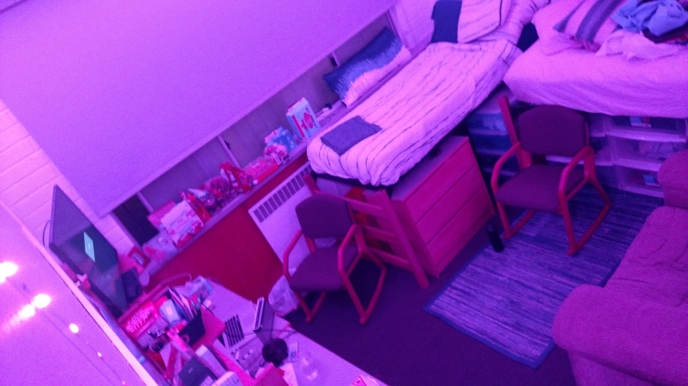
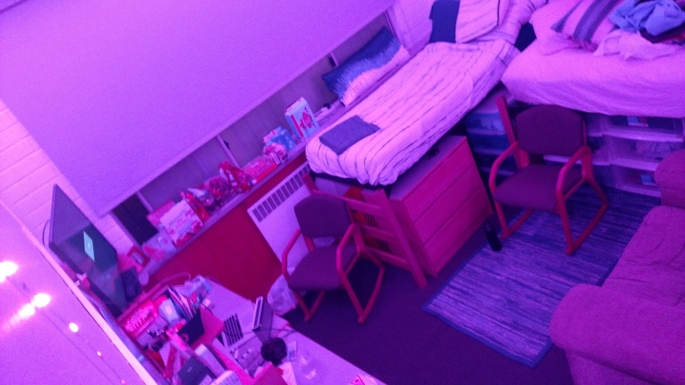

This is my room freshman year.
It was pretty standard, unorganized, and in a hallway called the "Cave" that did not have much foot traffic.
Realizing that I needed something, at the start of December I drove to Brentwood with a borrowed car from someone I didn't know, picked up a half-couch, and drove back with the trunk tied closed as the couch stuck out the back.
It was my first time driving in LA, and I drove back through rush hour traffic.
When I got home, I spent two hours rearranging my room until I was satisfied.
- MP
